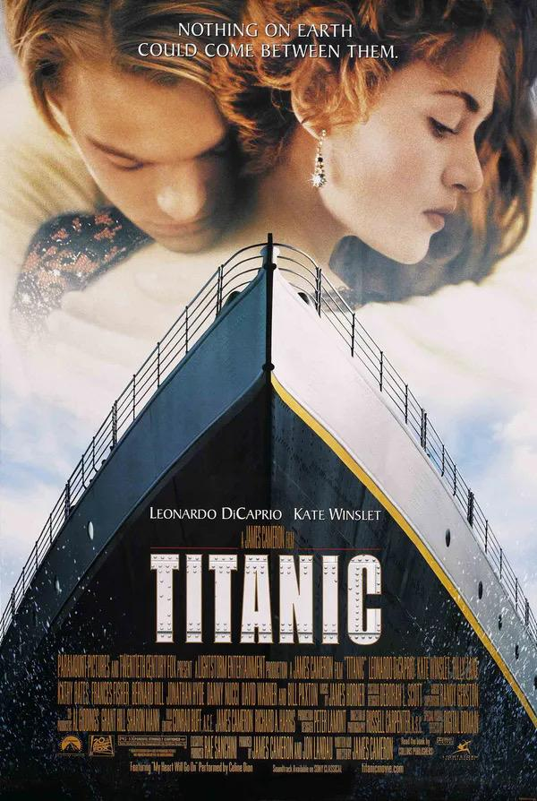

泰坦尼克号
剧情简介
1912 年，号称"永不沉没"的泰坦尼克号从英国启航驶向美国。穷画家杰克在赌桌上赢得船票，与厌倦上流社会生活的贵族少女露丝在船上相遇相爱。然而冰山撞碎了这段跨越阶级的爱情，也击碎了这艘巨轮的骄傲。在沉船的混乱与冰冷的海水中，杰克把生的希望留给了露丝，这段刻骨铭心的爱情随沉船长眠海底，却被幸存者铭记一生。

1912 年，号称"永不沉没"的泰坦尼克号从英国启航驶向美国。穷画家杰克在赌桌上赢得船票，与厌倦上流社会生活的贵族少女露丝在船上相遇相爱。然而冰山撞碎了这段跨越阶级的爱情，也击碎了这艘巨轮的骄傲。在沉船的混乱与冰冷的海水中，杰克把生的希望留给了露丝，这段刻骨铭心的爱情随沉船长眠海底，却被幸存者铭记一生。